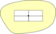

Take a tour
Designed for multilayers and real-time labeling of maps, PAL provides impressive results, both in terms of execution time and solution quality. It uses combinatorial optimization approaches to maximize number of displayed labels (in opposition to greedy approaches). PAL is useful for polygon, line, point features labeling, and numerous options can be set for each layer to customize the labeling process.
See below several scenarios describing what PAL offers, or give it a try using one of the GIS software having PAL inside.
For polygons
|  |
Available options : around centroid, on perimeter, around perimeter, horizontal, free
without PAL, labels strictly on centroids and overlay with PAL, option horizontal, labels are not strictly on the centroid, rather at best over the feature
without PAL, labels strictly on centroids and overlap with PAL, each label fits main orientation of shape
with PAL, features are cropped against map extent with Pal, labels always appear on the map even if most part of feature is outside of the map
without PAL, labels strictly on centroids, overlap each other and overlap gray building with PAL, layer of buildings is set as an obstacle layer so as no label overlap its features
without PAL, labels overlap each other within same layer and with labels from other layer with PAL, number of displayed labels is maximized with no overlap, even with labels of others layers
with PAL, multilayer labeling situation with same priority for each layer with PAL, multilayer labeling situation with higher priority on violet labels so as there are more labels for buildings then underlying parcels
For Lines
Available options : on the line, around the line
wihtout PAL, labels stricly on centroids and overlap with PAL, labels around the line so as to maximize the number of displayed labels
For Points
One option : around the point, four candidate positions are considered
without PAL, labels on centroids with only one position considered (up-right) and overlap with PAL, labels around the point so as to maximize the number of displayed labels (also no overlap with the symbol)